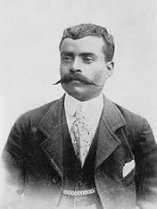
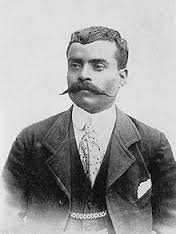
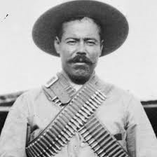
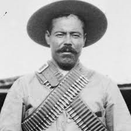
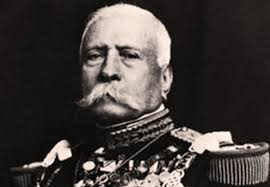
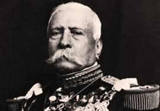

Emiliano Zapata
Emiliano Zapata Salazar (Anenecuilco, Morelos, 8 de agosto de 1879 - Chinameca, Morelos, 10 de abril de 1919) fue uno de los líderes militares y campesinos más importantes de la Revolución mexicana y un símbolo de la resistencia campesina en México. Como parte del movimiento revolucionario, estuvo al mando del Ejército Libertador del Sur. También fue conocido como el «Caudillo del Sur». Ideólogo e impulsor de las luchas sociales y las demandas agraristas, así como de justicia social, libertad, igualdad, democracia social, propiedad comunal de las tierras y el respeto a las comunidades indígenas, campesinas y obreras de México, víctimas de la oligarquía y el latifundismo de los hacendados del Porfiriato. Zapata enarboló como estandarte el lema "La tierra es de quien la trabaja".
 

 



 
